Managed Switch Security
Hardening Layer 2 access controls across all three managed switches in the lab: the Cisco Catalyst 2950 (Switch001), the Cisco Catalyst 3550 (Switch002), and the Dell PowerConnect 6248P (Switch003) — covering switch port security, trunk security, and VLAN segmentation, including the VLAN 999 blackhole for unused ports.
This document does not sanitize the process. Two genuine issues were discovered during verification: a pair of ports where sticky MAC learning had not yet occurred at the time of the verification snapshot, and a native VLAN tagging mismatch on the Switch002-to-Switch003 trunk link that was found, diagnosed, and corrected in the course of this work. Both are documented in full below, including the diagnostic commands used and the reasoning behind each fix.
1Switch Port Security
Switch port security limits which device is allowed to communicate on a given access port. Rather than trusting any device plugged into a live jack, each secured port is configured with a maximum number of allowed MAC addresses. Using sticky learning, the switch treats whatever device is transmitting on the port at the time of configuration as the authorized device, writes that MAC address into the running configuration as a static entry, and rejects traffic from any other MAC address that later appears on that port.
This control is applied only to active, in-use access ports. Ports that are unused are handled separately, through administrative shutdown and reassignment to the VLAN 999 blackhole (see Section 3), since a port that is already down and isolated has no need for MAC-based restriction on top of that.
1.1 Switch001 (Cisco Catalyst 2950)
Switch001 hosts four active access ports carrying server and infrastructure traffic: the Hyper-V host (Fa0/2), TrueNAS (Fa0/3), the Raspberry Pi 5 DNS server (Fa0/4), and the Raspberry Pi 3 Samba NAS (Fa0/5). All four were configured identically, as a contiguous interface range, with a maximum of one MAC address per port, sticky learning, and a restrict violation action so that an unauthorized device is blocked without taking the entire port down.
interface range fa0/2 - 5
switchport mode access
switchport port-security
switchport port-security maximum 1
switchport port-security violation restrict
switchport port-security mac-address sticky
end
write memory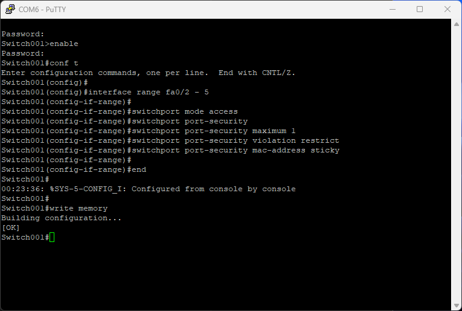
Verification confirms the control is enabled and active on all four ports, with a restrict violation action:
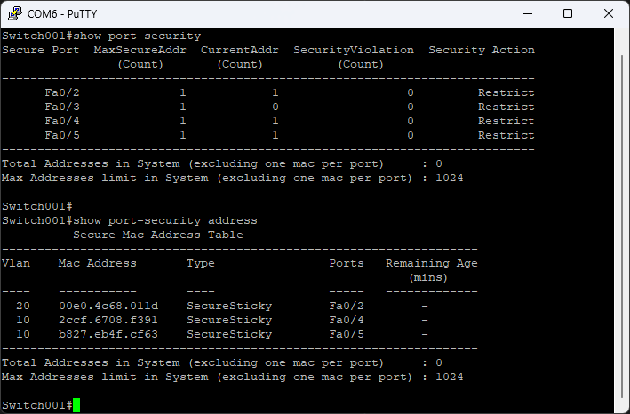
show port-security and show port-security address output.Verification Note: Fa0/3 (TrueNAS) shows a Current Address count of 0 and does not appear in the Secure MAC Address table, while Fa0/2, Fa0/4, and Fa0/5 all show a learned sticky address. This is expected, not a failure. Sticky learning only occurs once traffic actually passes through the port, and TrueNAS was not actively transmitting at the moment this snapshot was captured. A follow-up verification pass, taken after TrueNAS generates traffic on the port, would be expected to show a learned sticky MAC entry.
Issue Discovered: Shared Hypervisor Uplink Exceeded Port Security Limit
After the entire lab was powered off for several days and then brought back online, Domain Controller DC01 showed a valid IP assignment but could not reach any host on the network, not even its own default gateway. DC01 runs as a VM on the SRV-HYPERV-01 Hyper-V host, and its traffic path runs from the VM through the Hyper-V external vSwitch, out a dedicated USB-to-Ethernet adapter, into Switch001 Fa0/2, the same port secured earlier in this section with a maximum of one MAC address.
That maximum of one is the root cause. Fa0/2 is not a single-device access port; it is a shared uplink carrying traffic for every VM bridged onto that external vSwitch, DC01 included, each with its own distinct MAC address. With the port limited to one MAC and sticky learning enabled, whichever VM transmitted first after power-on had its MAC locked in as the sole authorized address. Every other VM sharing that same physical adapter, including DC01, had its frames silently discarded under the restrict violation action from that point forward. The port itself stayed up throughout, which is why DC01 showed a normal IP configuration while remaining completely unreachable.
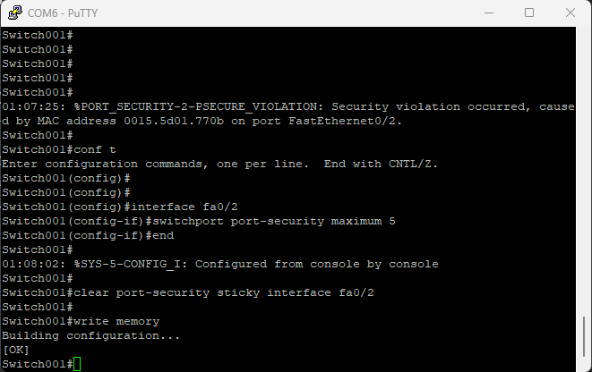
The console log confirms the violation directly: a security violation on Fa0/2 caused by a specific MAC address that exceeded the port's one-address limit. The fix raises the maximum to account for every MAC expected to transit that shared uplink, three current VMs plus headroom for a planned fourth, and clears the existing sticky entry so the port can relearn from a clean state rather than staying pinned to whichever device won the race after the last reboot:
enable
configure terminal
interface fa0/2
switchport port-security maximum 5
end
clear port-security sticky interface fa0/2
write memoryResolved: Raising the maximum to 5 and clearing the stale sticky entry restored connectivity for DC01 and every other VM sharing Fa0/2. The underlying lesson matters more than the fix itself: port security's default model assumes one device per port, and that assumption does not hold on a port that is structurally a shared hypervisor uplink. The maximum on a port like this is not a value to set once; it is a running total tied to how many VMs live on that host, and it needs to be revisited every time that inventory changes, or the same outage will recur after the next reboot.
1.2 Switch002 (Cisco Catalyst 3550)
Switch002 has a single active client access port, Fa0/2, connected to the HT Technology Mini PC on VLAN 40. The remaining relevant ports on this switch are either trunk links (Fa0/20, Fa0/23) or a Layer 3 routed uplink to the FortiGate 60E (Fa0/24), none of which take port security since it applies only to Layer 2 access ports.
interface fa0/2
switchport mode access
switchport port-security
switchport port-security maximum 1
switchport port-security violation restrict
switchport port-security mac-address sticky
end
write memory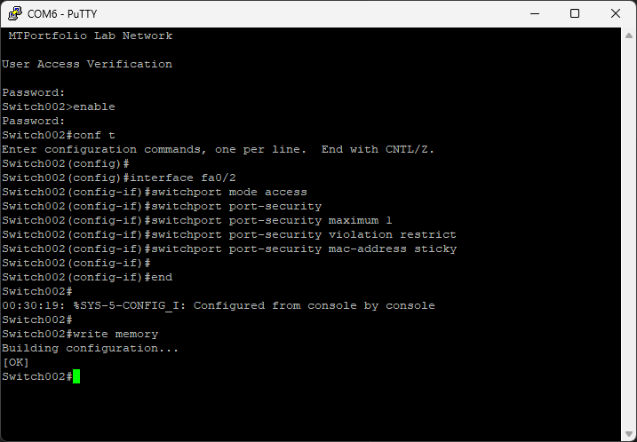
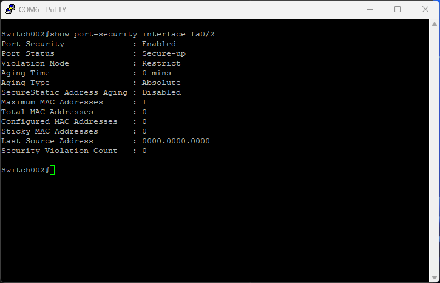
show port-security interface fa0/2 output.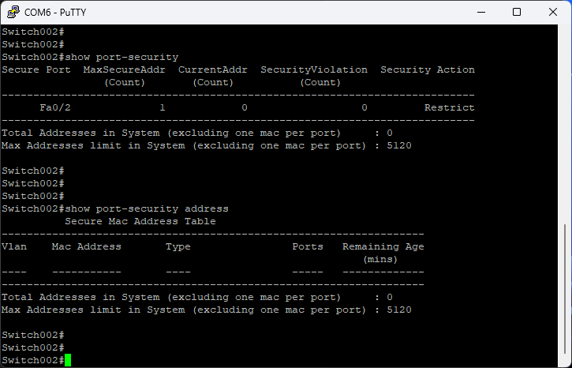
show port-security and show port-security address output.Verification Note: Fa0/2 shows zero total, configured, and sticky MAC addresses, with a Last Source Address of 0000.0000.0000. As with Fa0/3 on Switch001, this reflects the fact that the HT Technology Mini PC was not actively passing traffic at the time port security was enabled and verified. The control is correctly applied and will lock in the device's MAC address the next time it transmits on this port.
1.3 Switch003 (Dell PowerConnect 6248P)
Switch003 carries two active client access ports: ThinkPad E15 #1 on 1/g11 and ThinkPad E15 #2 on 1/g25. The Dell PowerConnect CLI departs meaningfully from Cisco IOS syntax for this feature. There is no sticky mode; the 6248P supports either dynamic locking, where the switch learns the connected MAC and holds it as long as the link stays up, or static locking, where the MAC is entered manually. There is also no configurable violation action; unauthorized frames are simply discarded by default rather than triggering a selectable restrict, shutdown, or protect mode as on Cisco IOS.
configure
interface ethernet 1/g11
port security max 1
port security
exit
configure
interface ethernet 1/g25
port security max 1
port security
exit
copy running-config startup-config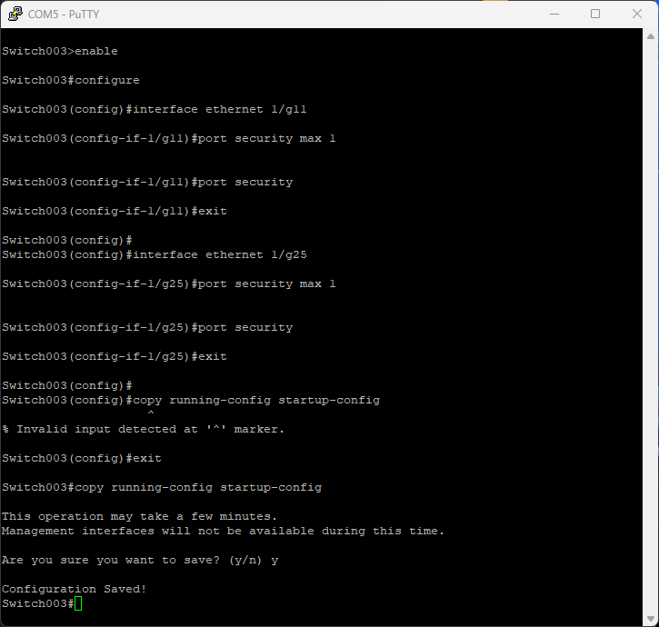
Verification on 1/g11 confirms the port is locked, with a discard action, a maximum of one address, and SNMP trap notifications disabled:
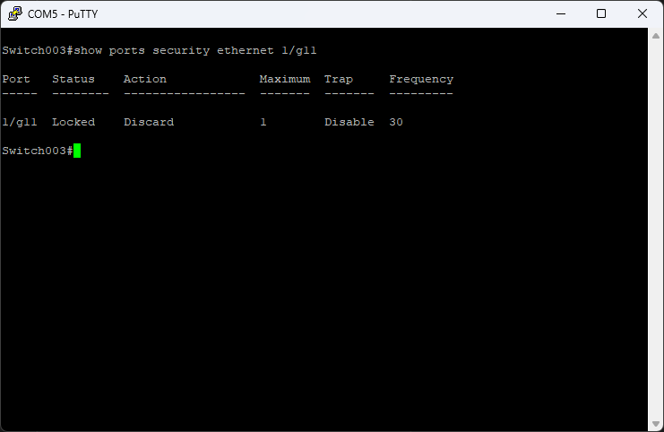
show ports security ethernet 1/g11 output.Documentation Gap: No verification screenshot exists for 1/g25 (ThinkPad E15 #2). The configuration command was issued and saved alongside 1/g11 in the same session, but a corresponding show ports security ethernet 1/g25 was not captured. This is noted honestly rather than omitted. The configuration is presumed applied based on the shared configuration screenshot, and a follow-up verification screenshot is a known outstanding item for this section.
1.4 Cisco IOS vs. Dell PowerConnect: Command Comparison
Because this section spans two different vendor CLIs, the table below summarizes the practical differences encountered while implementing the same security control across platforms.
| Concept | Cisco IOS (2950 / 3550) | Dell PowerConnect (6248P) |
|---|---|---|
| Enable port security | switchport port-security | port security |
| Set maximum MACs | switchport port-security maximum 1 | port security max 1 |
| Sticky learning | switchport port-security mac-address sticky | Not supported; dynamic or static locking only |
| Violation action | Configurable: restrict, shutdown, or protect | Fixed; unauthorized frames are discarded |
| Verification | show port-security interface | show ports security ethernet |
2Trunk Security
Trunk security governs how VLAN traffic is carried across the switch-to-switch links that form the backbone of the lab network. Two trunk links exist in the current topology: Switch001 to Switch002 over Fa0/23 on both ends, and Switch002 to Switch003 over Fa0/20 (Cisco trunk) to 1/g48 (Dell general-mode port). The core security concern on any trunk is consistent handling of the native VLAN. A mismatch between what one end sends untagged and what the other end expects tagged is a textbook VLAN hopping exposure, and this section documents one such mismatch being found and corrected.
2.1 Switch001 to Switch002 (Fa0/23)
Both ends of this link are Cisco Catalyst switches, which keeps the configuration syntax identical on both sides. VLAN 99 is used as the native VLAN, with VLANs 1, 10, 20, 40, and 99 permitted across the link. VLAN 50 (Management) does not appear in the allowed list shown below because these screenshots were captured before VLAN 50 existed as a concept in this lab at all. VLAN 50 was created later, during the FortiGate 60E deployment documented in the Infrastructure & Sysadmin section, after ping tests from the FortiGate to the switch management IPs failed. The root cause was that switch management was still running on VLAN 1, the default VLAN present on every port by default and a recognized security risk. That failure prompted a dedicated Management VLAN migration: VLAN 50 was created on Switch001 and Switch002, their management interfaces were moved off VLAN 1 onto new VLAN 50 SVIs (Switch001 at 192.168.50.2, Switch002 at 192.168.50.6), and VLAN 50 was added to the Fa0/23 trunk allowed list on both switches at that time. Switch003 was not part of that migration; its own VLAN 50 gap was a separate, later discovery covered in Section 2.2.
interface fa0/23
description Trunk-to-Switch002-3550
switchport trunk encapsulation dot1q
switchport mode trunk
switchport trunk native vlan 99
switchport trunk allowed vlan 1,10,20,40,99
no shutdown
exit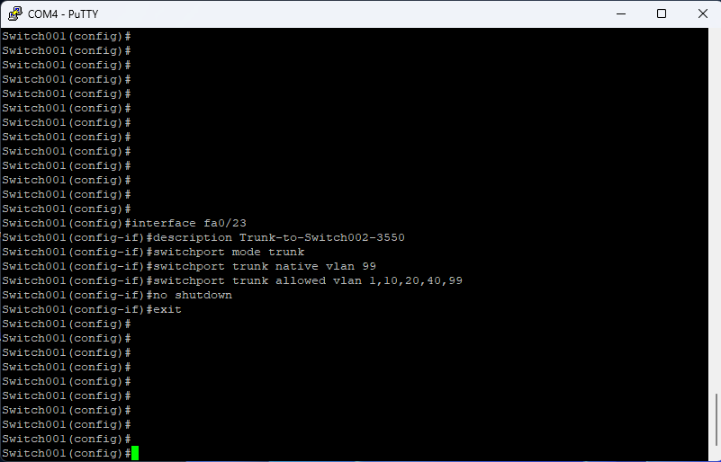

show interfaces trunk output for Fa0/23.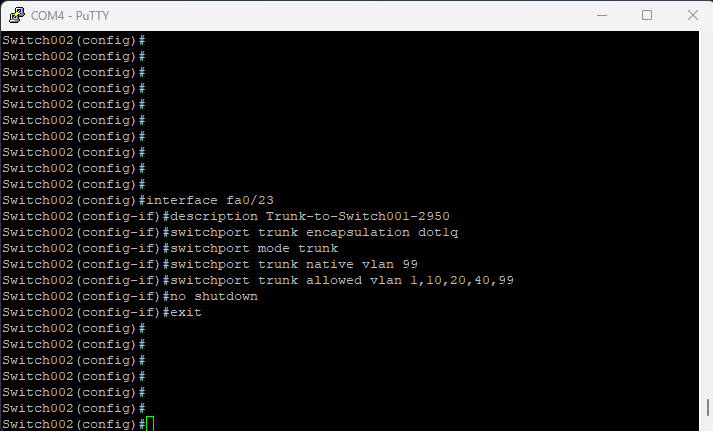

show interfaces trunk output for Fa0/23.Both sides report identical trunking status, encapsulation, native VLAN, and allowed VLAN list. This link required no troubleshooting. VLAN 50's presence on this link following the Management VLAN migration is confirmed in the final trunk verification shown at the end of Section 2.2, once Switch003 was also brought into agreement.
2.2 Switch002 to Switch003 (Fa0/20 / 1/g48)
This link connects a Cisco trunk port to a Dell PowerConnect port running in General mode, the Dell equivalent used for links that need explicit tagged and untagged VLAN membership rather than Cisco's single native-VLAN model. The original configuration on 1/g48 declared VLAN 99 as untagged and VLANs 10, 20, and 40 as tagged. VLAN 50 (Management) does not appear yet in this initial configuration; it was added to this trunk in a later pass, described immediately below, so its absence here is expected rather than an oversight.
interface ethernet 1/g48
description Trunk-to-Switch002-3550
switchport mode general
switchport general pvid 99
switchport general allowed vlan add 99 untagged
switchport general allowed vlan add 10,20,40 tagged
VLAN 50 (Management) was added to this trunk later, during the VLAN 999 blackhole audit documented in the Infrastructure & Sysadmin section. When that addition was applied, VLAN 99 was re-added in the same command alongside 10, 20, 40, and 50, which changed its tagging state from untagged to tagged in the process. The two verification screenshots below capture that resulting state, with VLAN 50 now present.
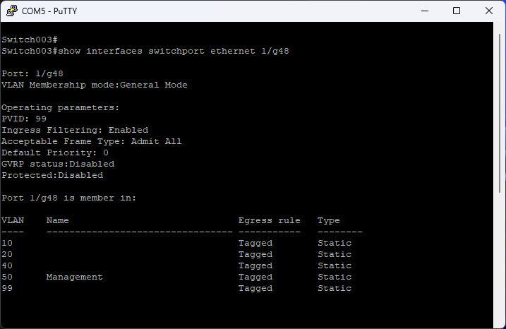
show interfaces switchport ethernet 1/g48, showing VLAN 99 as Tagged following the VLAN 50 addition.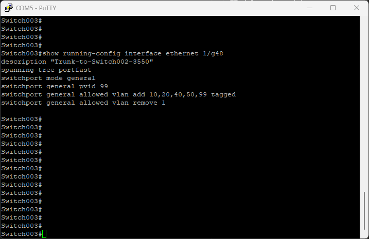
show running-config interface ethernet 1/g48, VLANs 10, 20, 40, 50, and 99 all tagged.Issue Discovered: Native VLAN Tagging Mismatch
Reviewing the running configuration on 1/g48 side by side with the Switch002 trunk configuration surfaced a genuine inconsistency. Switch002's Fa0/20 is a true Cisco trunk port with a native VLAN of 99, meaning it sends VLAN 99 traffic untagged by default, standard IEEE 802.1Q behavior. Switch003's 1/g48, however, had VLAN 99 explicitly declared as tagged following the VLAN 50 update. One end of the link was sending VLAN 99 untagged while the other end expected to receive it tagged.
Diagnosis
To confirm the mismatch before making any changes, two read-only commands were run on Switch002 to check the Fa0/20 side of the link directly, since no prior screenshot had captured that port from Switch002's perspective:
show run interface fa0/20
show interfaces fa0/20 switchportDocumentation Gap: The initial diagnostic pass on Fa0/20 reported an Administrative Mode of trunk but an Operational Mode of down, because the Dell PowerConnect 6248P was powered off at the time and Fa0/20 had no active link partner to negotiate trunking with. No screenshot of that initial down-state output was captured; the diagnostic screenshots that follow were taken after the 6248P was confirmed powered on and the same two commands were re-run. Noted honestly rather than reconstructed after the fact.
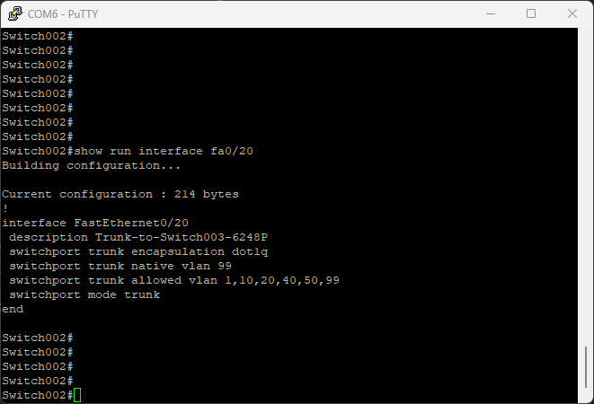
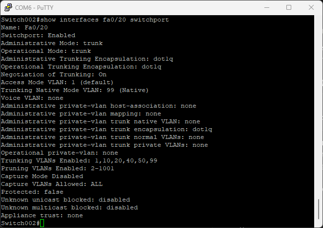
Fix Applied
With the link confirmed active, VLAN 99 was corrected on the Switch003 side to match Switch002's native, untagged handling:
enable
configure
interface ethernet 1/g48
switchport general allowed vlan add 99 untagged
exit
copy running-config startup-config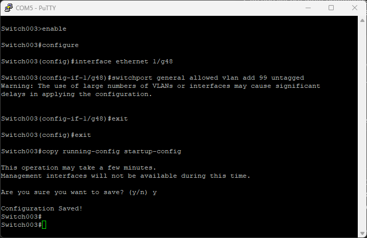
Fix Verified
Post-fix verification confirms VLAN 99 now shows an egress rule of Untagged, while VLANs 10, 20, 40, and 50 remain correctly Tagged:
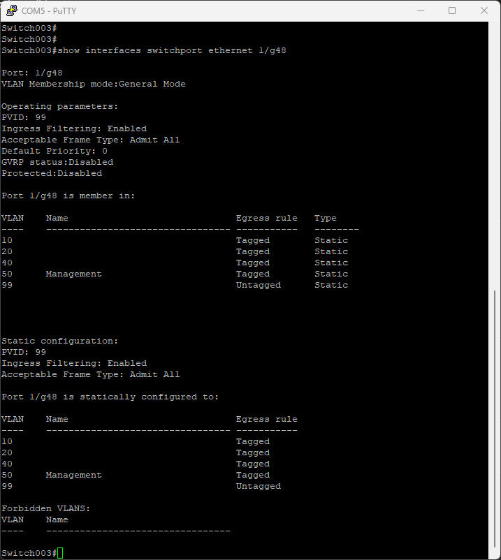
show interfaces switchport ethernet 1/g48 after the fix, VLAN 99 now Untagged.The running configuration reflects the corrected state as two separate allowed-VLAN statements: VLAN 99 on its own line, defaulting to untagged, and VLANs 10, 20, 40, and 50 declared tagged. This split is simply how the Dell CLI represents mixed tagged and untagged membership on the same port; it is not a leftover duplicate command.
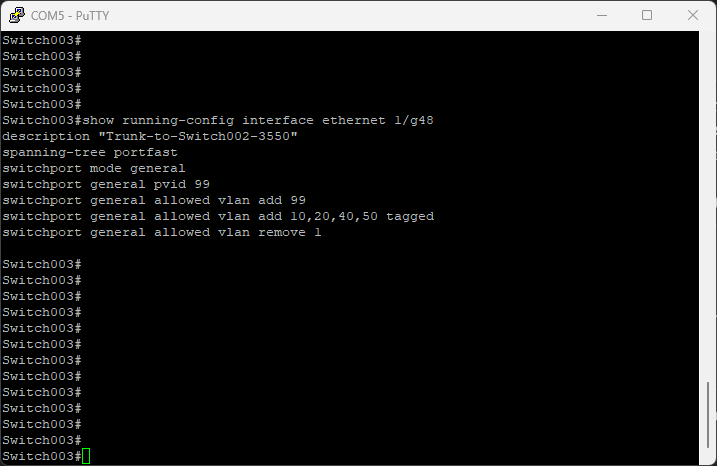
As a final consistency check, Switch002's trunk table was reviewed once more to confirm both trunk links now report matching status, native VLAN, and allowed VLAN lists:
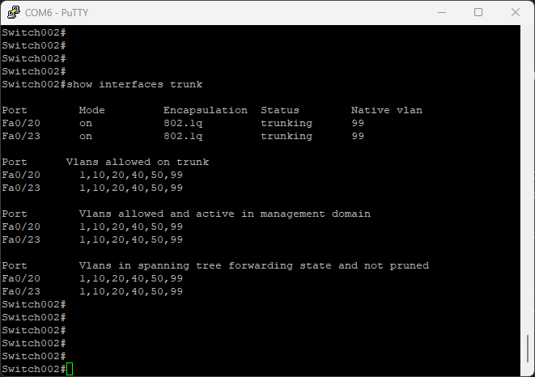
show interfaces trunk, confirming Fa0/20 and Fa0/23 both trunking with matching native VLAN and allowed VLAN lists.Resolved: The Switch002-to-Switch003 trunk link now has consistent native VLAN handling on both ends. The discovery, diagnosis, and correction of this issue is retained here in full rather than only documenting the final clean state, since it reflects the kind of cross-vendor trunk verification a production environment would require.
3VLAN Security
VLAN security in this lab covers two related pieces of work: establishing the segmentation scheme itself across all three switches, and eliminating the attack surface presented by unused switch ports by shutting them down and reassigning them to an isolated, non-routed blackhole VLAN.
3.1 VLAN Creation and Naming
The same four functional VLANs, plus the native VLAN, were created and named consistently across all three switches: VLAN 10 (Servers), VLAN 20 (Infrastructure), VLAN 40 (Clients), and VLAN 99 (Native). Consistent naming across switches matters operationally; it means show vlan brief output is self-documenting on any switch in the topology without needing to cross-reference a separate naming key.
vlan 10
name Servers
exit
vlan 20
name Infrastructure
exit
vlan 40
name Clients
exit
vlan 99
name Native
exit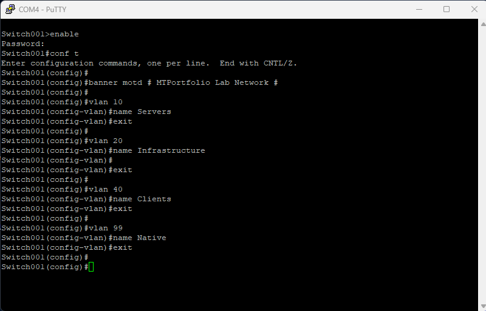
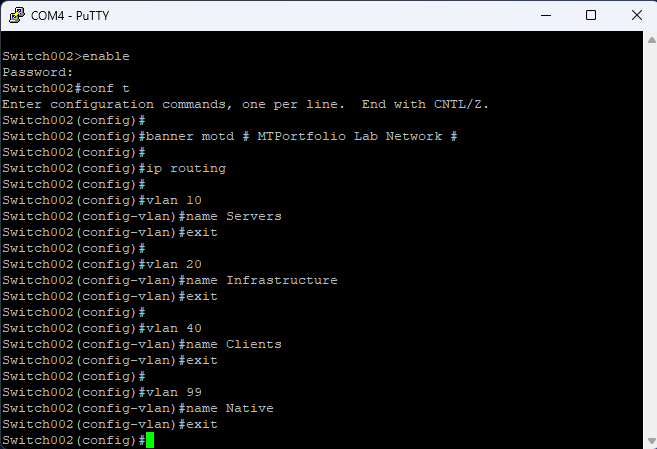
ip routing for Layer 3 support.The Dell PowerConnect syntax for VLAN creation differs slightly, entering a dedicated VLAN database configuration mode rather than creating VLANs directly under global configuration:
vlan database
vlan 10
vlan 20
vlan 40
vlan 99
exit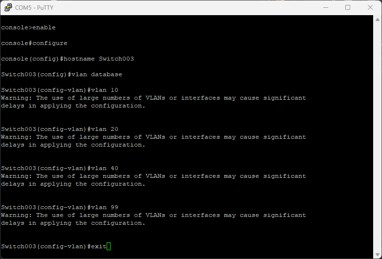
3.2 VLAN 999 Blackhole: Unused Port Isolation
Every port not actively carrying traffic across all three switches was administratively shut down and reassigned to VLAN 999, a dedicated blackhole VLAN with no routing, no DHCP scope, and no legitimate purpose beyond acting as a dead end for any device plugged into an unused jack. This is a deliberate defense against an attacker, or a curious houseguest, simply plugging into an open port and receiving a live network connection. Combining shutdown with VLAN reassignment is intentionally redundant: even if the port were manually re-enabled, it would still land in an isolated VLAN with no path anywhere.
Switch001
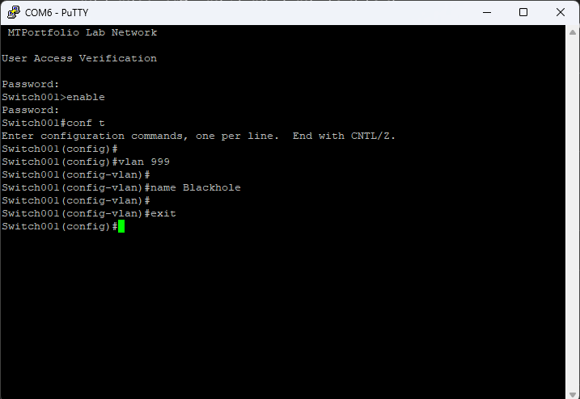
Before reassignment, the default VLAN 1 port membership was reviewed to confirm exactly which ports still needed to be moved:
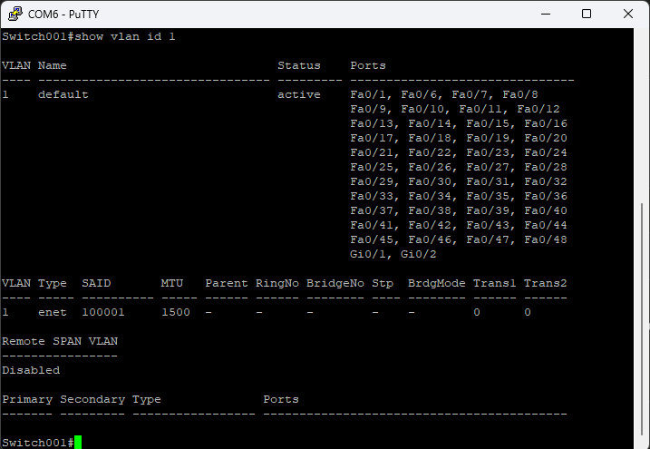
show vlan id 1, confirming ports still on the default VLAN.interface range fa0/1
switchport mode access
switchport access vlan 999
shutdown
exit
interface range fa0/6 - 22
switchport mode access
switchport access vlan 999
shutdown
exit
interface range fa0/24 - 48
switchport mode access
switchport access vlan 999
shutdown
exit
interface range gi0/1 - 2
switchport mode access
switchport access vlan 999
shutdown
exit
end
write memory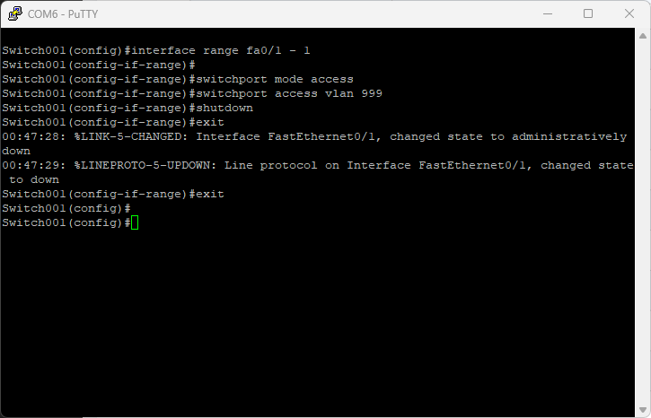


Switch002
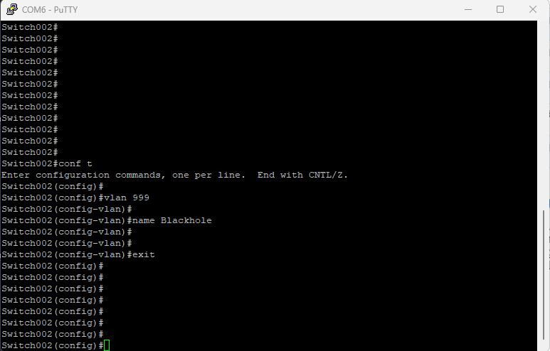
interface range fa0/3 - 19
switchport mode access
switchport access vlan 999
shutdown
interface range fa0/21 - 22
switchport mode access
switchport access vlan 999
shutdown
interface range gi0/1 - 2
switchport mode access
switchport access vlan 999
shutdown
exit
end
write memory


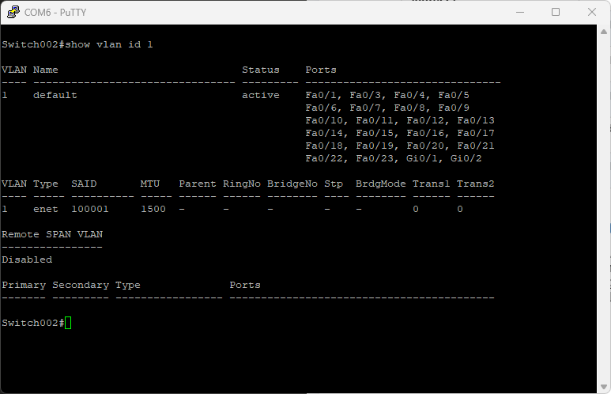
show vlan id 1, confirming default VLAN membership prior to reassignment.Switch003
The Dell PowerConnect 6248P was addressed in three interface ranges to cover its full 48-port layout, using the platform's ethernet range syntax rather than Cisco's fa0/x - y notation:
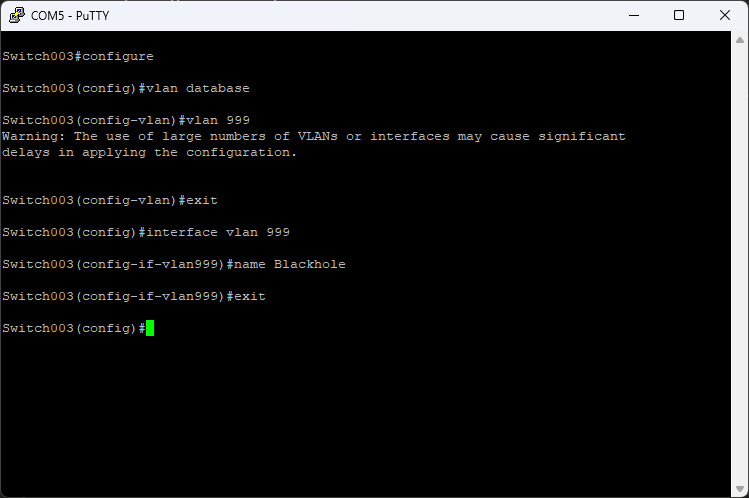
interface range ethernet 1/g1-1/g10
switchport mode access
switchport access vlan 999
shutdown
exit
interface range ethernet 1/g12-1/g24
switchport mode access
switchport access vlan 999
shutdown
exit
interface range ethernet 1/g26-1/g47
switchport mode access
switchport access vlan 999
shutdown
exit
copy running-config startup-config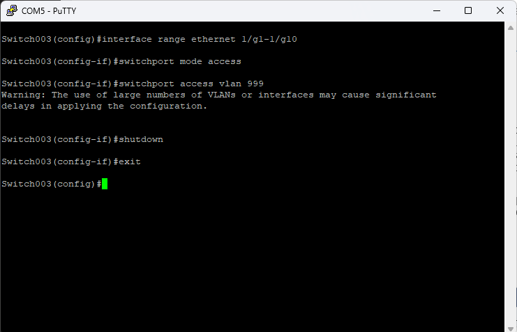
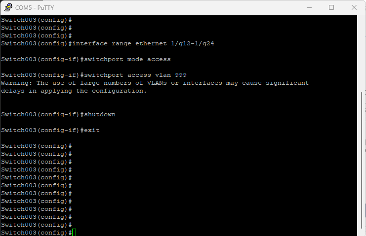
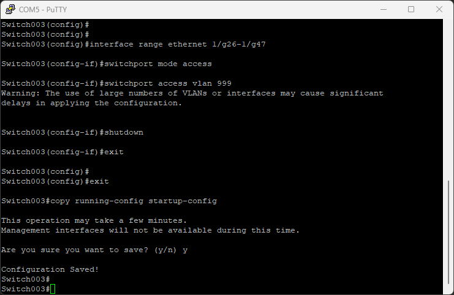
Coverage Note: Across all three switches, the blackholed ranges intentionally exclude every port with an active role documented elsewhere in this section: client and server access ports (Switch Port Security), trunk links (Trunk Security), and the FortiGate uplink and SPAN destination port on Switch001/Switch002. Every remaining physical port is accounted for and isolated.